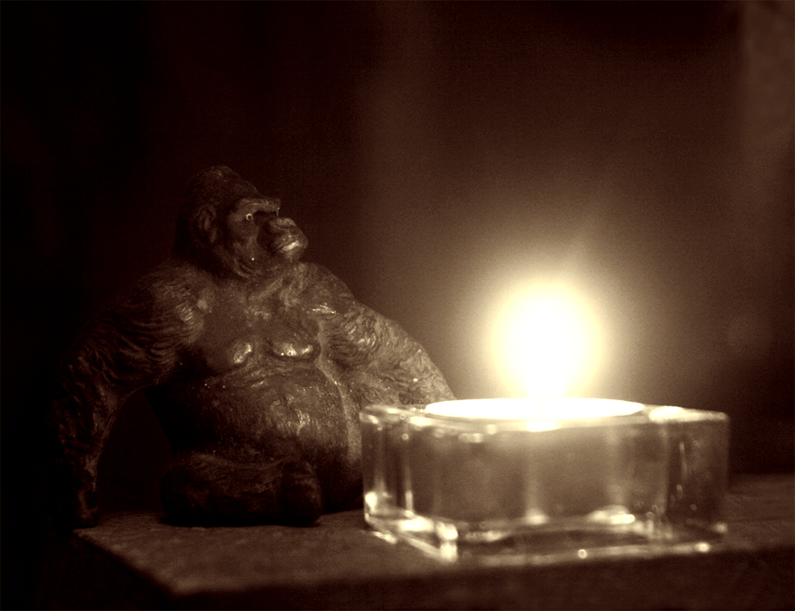

Himmelslaterne - Weltuntergang - Nachwelt

"Bei Müllers hats gebrannt, brannt, brannt. Da bin ich hingerannt, rannt, rannt..."Nicht nur Böllerverbote lassen sich schwer umsetzen.
Nicht nur in Australien zeigt sich eskalierender Irrsinn.
"Liebe Nachwelt! Wenn ihr nicht gerechter, friedlicher und überhaupt vernünftiger sein werdet, als wir sind bzw. gewesen sind, so soll euch der Teufel holen. Albert Einstein"
In der Regel sind aber die Verursacher nicht immer die Opfer.
Und selbst wenn das ganze Affenhaus brennt, wird das nicht unbedingt jedem Erleuchtung bringen.
Menschenaffen aus Krefeld werden in einer Tierkörperentsorgungsanlage enden.
Mehr als 30 Tiere starben: fünf Borneo-Orang-Utans, zwei kongolesische Flachlandgorillas, mehrere Silberäffchen, Sakiaffen, Goldene Löwenäffchen, Zwergseidenäffchen, Flughunde, viele Vögel und ein Schimpanse aus Westafrika.
Ein Meer aus Kerzen erinnerte an die verbrannten Tiere.
Und es soll eine Trauerfeier geben.
Ganz anders am Tollensetal:
Mehr als 1.000 Schweine verendeten 2019 in der Gemeinde Alt Tellin.
In der modernsten Schweinefabrik Europas.
Als Grund nannten die Betreiber (LFD) „eine individuelle Konstruktionsschwäche der Anlage”.
Die Lüftung war teilweise ausgefallen. Ganz ohne Brand starben auch hier die Tiere auf Grund von Sauerstoffmangel.
Eine Trauerfeier hat es nicht gegeben.
Auch kein Bekennerschreiben der Verursacher.
Die Klage gegen den Betrieb der Schweinefabrik u.a. wegen eines unzureichenden Brandschutzkonzeptes wird seit Jahren nicht abschließend behandelt... da kann also noch einiges passieren.
Die mutmaßlichen Brandverursacherinnen von Krefeld aber haben sich selbst der Polizei gestellt.
Es sieht nicht so aus, dass sich die Betreiber des Tierparks daran ein Beispiel nehmen werden, und wohl auch nicht die Betreiber der hiesigen Schweinefabrik.
Die stillen Himmelslaternen der drei Frauen haben letztendlich eine Schwachstelle im geschlossenen System gezeigt.
Kein Fluchtweg in die Freiheit war vorhanden.
Und kein Brandmelder konnte die Tragödie verhindern...
„Es gibt Leute, die sich über den Weltuntergang trösten würden, wenn sie ihn nur vorausgesagt hätten.“ Friedrich Hebbel
Bei Müllers hats gebrannt, brannt, brannt.
Da bin ich hingerannt, rannt, rannt.
Da stand ein Polizist, zist, zist,
Der schrieb mich auf die List, List, List.
Die List, die fiel in´n Dreck, Dreck, Dreck.
Da war mein Name weg, weg, weg.
Da lief ich schnell nach Haus, Haus, Haus
Zu meinem Onkel Klaus, Klaus, Klaus.
Der Klaus der lag im Bett, Bett, Bett
bei seiner Frau Elisabeth.
Elisabeth, die lachte
Der Büstenhalter krachte
Der Bauch der explodierte
Ein Baby rauschmarschierte
Gleich in den ersten Stock
Da stand ein Mann im Unterrock
Bei Müllers hatt’s gebrannt,
Da bin ich hingerannt.
Do war a kleener Zaun,
Do wollt ich Äppel klaun
Do kam der Herr Schandarm
Und nahm mich untern Arm,
Der führt mich um die Eck
Und plötzlich war ich weg
Text und Musik: Verfasser unbekannt – um 1900